- 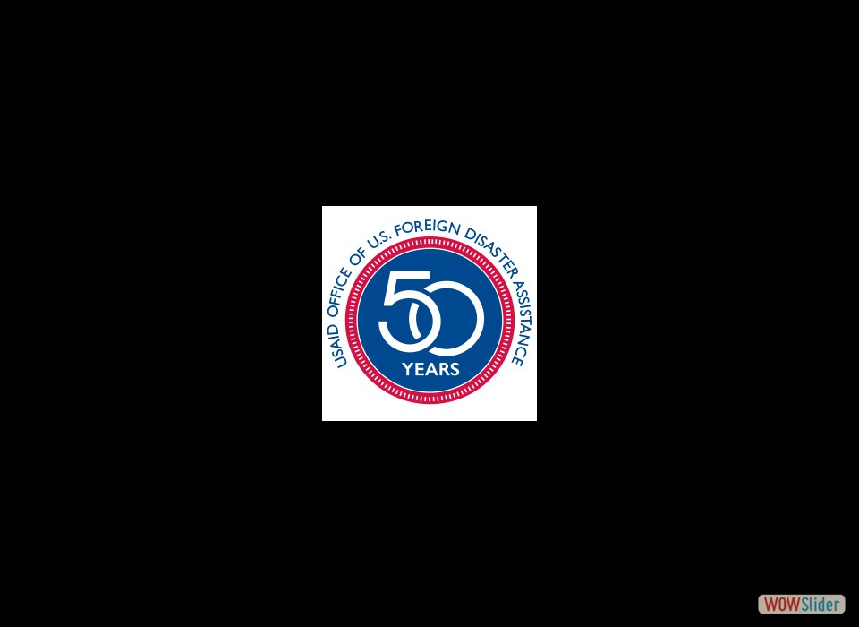The following photo exhibit is a journey back in time to commemorate OFDA’s 50th anniversary. Discover what OFDA & its partners have done through the years to not only save lives, but change them for the better.
 February 22, 2013: Syrian government forces launched a Scud missile in Aleppo killing 120 people, including Yousef Abo’s entire family. Four years of conflict has killed 160,000 people & left more than 10 million in need of assistance. Photo courtesy: Pablo Tosco, Internal Displacement Monitoring Centre.
February 22, 2013: Syrian government forces launched a Scud missile in Aleppo killing 120 people, including Yousef Abo’s entire family. Four years of conflict has killed 160,000 people & left more than 10 million in need of assistance. Photo courtesy: Pablo Tosco, Internal Displacement Monitoring Centre.- 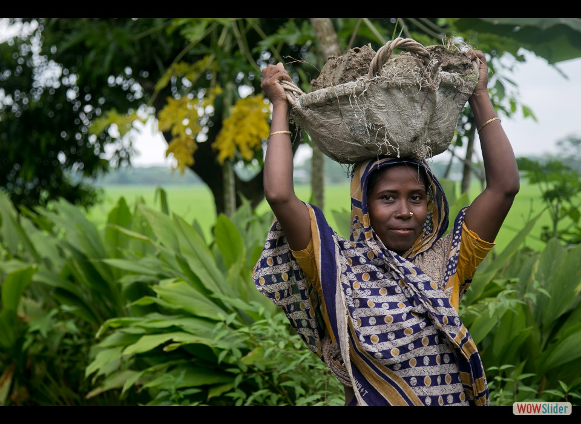Rahim Begum is building her dream home by gathering mud to raise the foundation of her house so it can better withstand disasters. As Bangladesh is prone to big storms & flooding, OFDA supports disaster risk reduction programs to ensure people are better prepared. Photo courtesy: Jennifer Hardy, Catholic Relief Services.
- 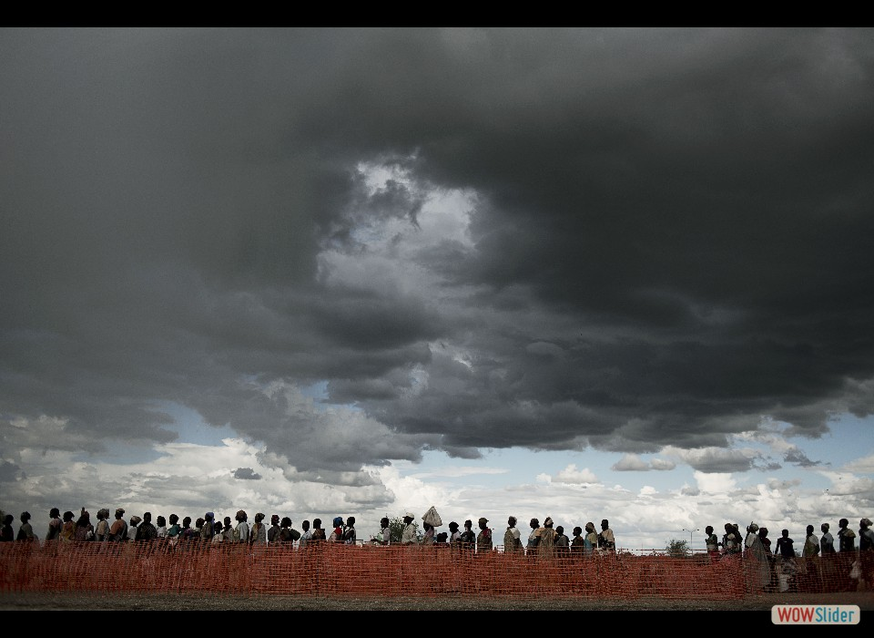Fighting broke out in December 2013, forcing more than 1.5 million people to flee their homes. The country now faces one of the world’s worst food shortages & the rainy season is forcing displaced people to wait in long lines at distribution sites. Photo courtesy: Jacob Zocherman, Danish Refugee Council.
- 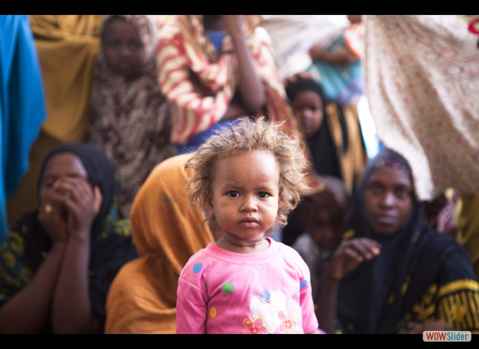Since 1991, Somalia has been beset by chronic food shortages, widespread violence, & other disasters. One out of 10 Somali children dies before reaching a first birthday. OFDA is supporting programs that allow 10s of thousands of children to get the healthcare they need. Photo courtesy: Celeste Hibbert, IOM.
- 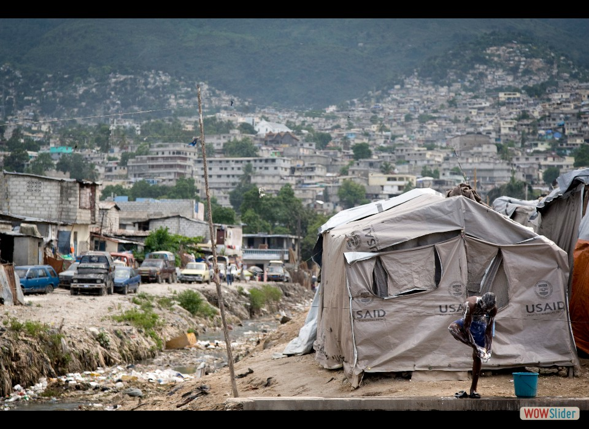January 12, 2010: a devastating magnitude 7.0 earthquake shook Haiti, killing an estimated 316,000 people & displacing 1.5 million more. OFDA provided shelter materials & other assistance to millions who lost their homes. Photo courtesy: Marco Dormino, UNICEF.
- 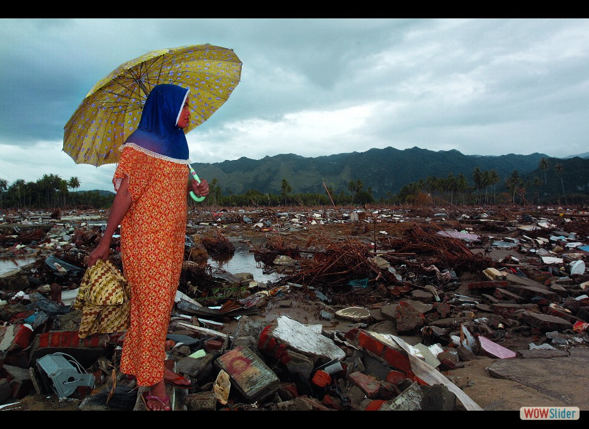December 26, 2004: the Indian Ocean Tsunami killed more than 220,000 people & displaced a million more in 12 countries. The U.S. provided more than $1 billion in aid & worked with NGOs like International Medical Corps to meet emergency needs. Photo courtesy: Chris Rainier, IMC.
- A young boy’s smile almost eclipses the brutality of war as he peers through what used to be the head of Saddam Hussein in a city that saw some of the fiercest battles in 2003. OFDA staff were the first non-military personnel to land in Baghdad, where they coordinated the provision of $451 million in humanitarian aid over the next 9 years. Photo courtesy: Kenneth O'Halloran, GOAL.
- 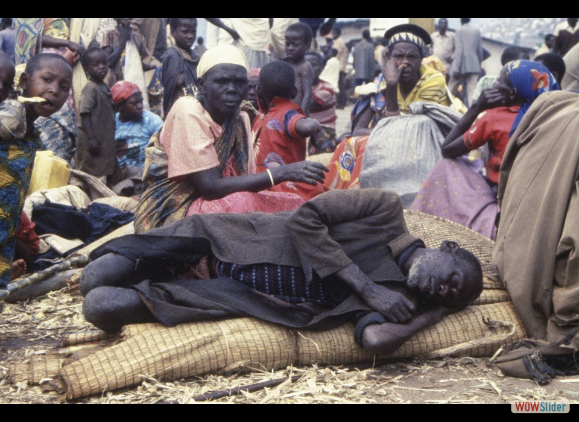During a 100-day span in 1994, one of the worst genocides in history claimed the lives of an estimated 800,000 people. OFDA immediately airlifted critical relief supplies & worked with the UN World Food Program (WFP) to distribute them to those in need. Photo courtesy: Brenda Barton, WFP.
- 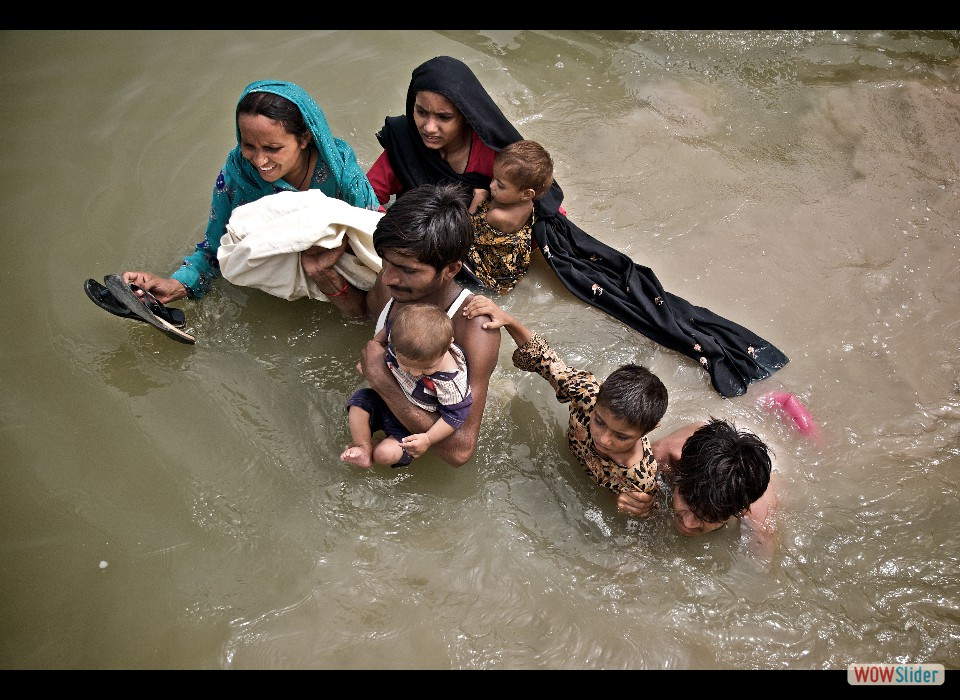Heavy monsoon rains in July 2010 triggered massive flooding that engulfed 1/5 of Pakistan. OFDA was immediately on the ground, working with Save the Children to provide shelter, household items, & safe drinking water to help the millions affected by the disaster. Photo courtesy: Colun Crowley, Save the Children.
- 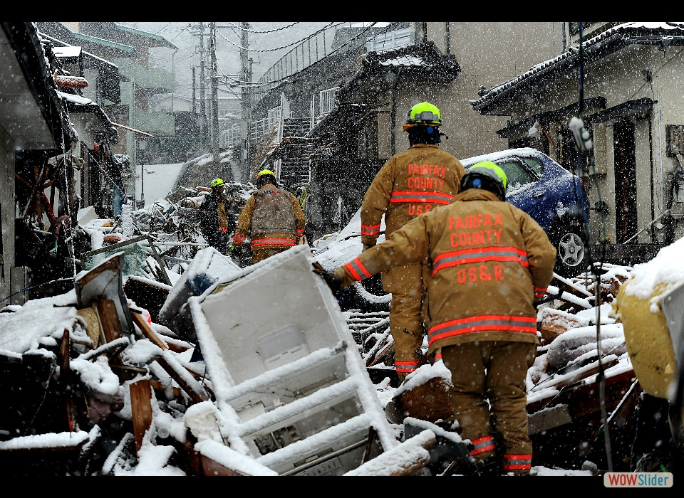March 11, 2011: a magnitude 9.0 earthquake generated a massive tsunami, whose waves struck the Fukushima Daiichi power plant, causing one of the worst nuclear meltdowns in history. OFDA deployed urban search & rescue teams to help in the search for survivors. Photo courtesy: Master Sgt. Jeremy Lock, U.S. Air Force.
- 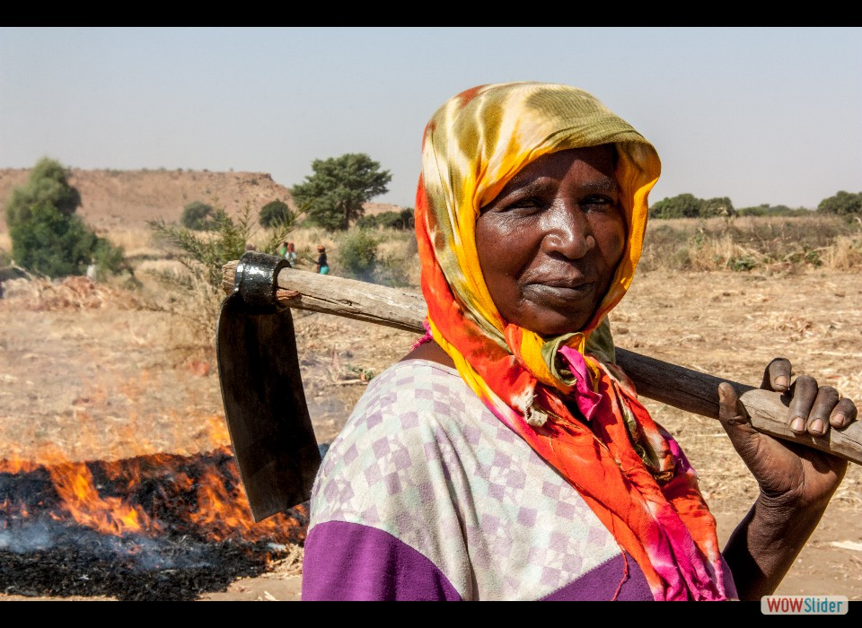Since 2003, ongoing violence, poor harvests, & record-high food prices have left nearly 7 million people in need of humanitarian assistance. OFDA is working with War Child Canada in Darfur to train female farmers to better withstand the impact of future disasters. Photo courtesy: Ross Tanner, War Child Canada.
- 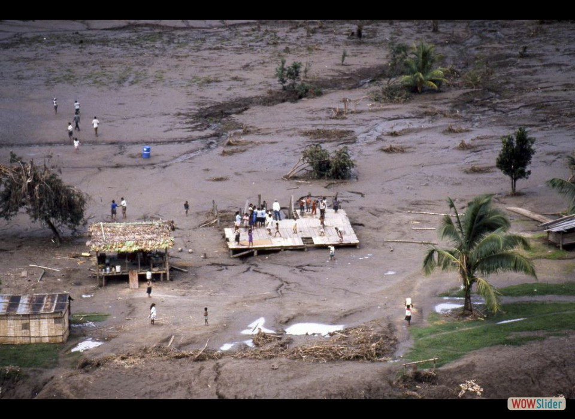The following photo exhibit is a journey back in time to commemorate OFDA’s 50th anniversary. Discover what OFDA & its partners have done through the years to not only save lives, but change them for the better.
 In the Ghor district, Mohammad Ali is living a better life, thanks to his new crop of potatoes! OFDA is working with Catholic Relief Services (CRS) to train farmers on improved planting & storage techniques so Mohammad & others can put more food on the table. Photo courtesy: Jennifer Hardy, CRS.
In the Ghor district, Mohammad Ali is living a better life, thanks to his new crop of potatoes! OFDA is working with Catholic Relief Services (CRS) to train farmers on improved planting & storage techniques so Mohammad & others can put more food on the table. Photo courtesy: Jennifer Hardy, CRS.- 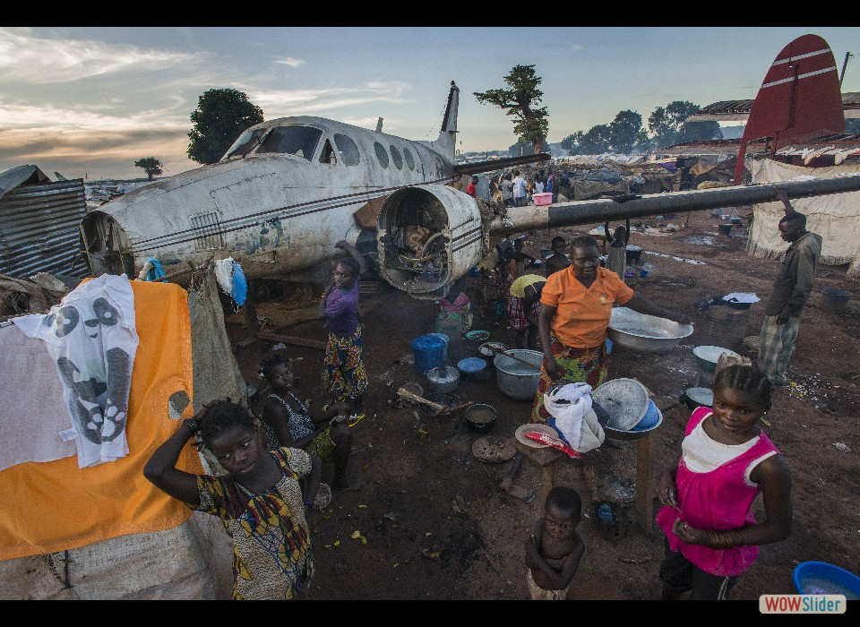Thousands flocked to the main airport in early 2014 to escape violence that left more than half the country in need of urgent assistance. In response, the U.S. & its partners are delivering food, clean water, & relief supplies. Photo courtesy: Peter Biro, IRC.
- 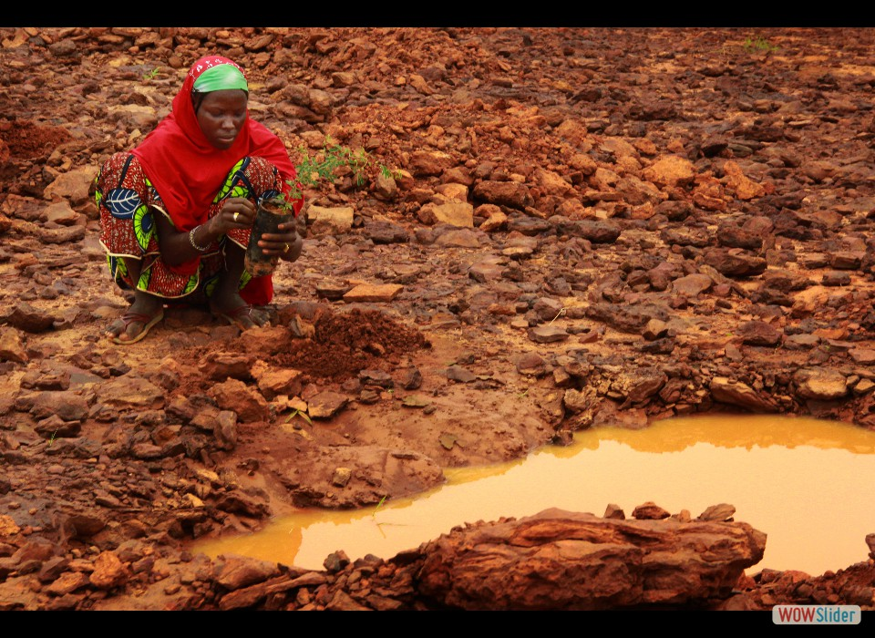Nearly 20 million people are at risk of hunger in the Sahel region of West Africa. In Niger, OFDA has teamed up with Lutheran World Relief (LWR) to help farmers cope with hunger & poverty by providing them with temporary jobs & training in between harvests. Photo courtesy: Emily Sollie, LWR.
- 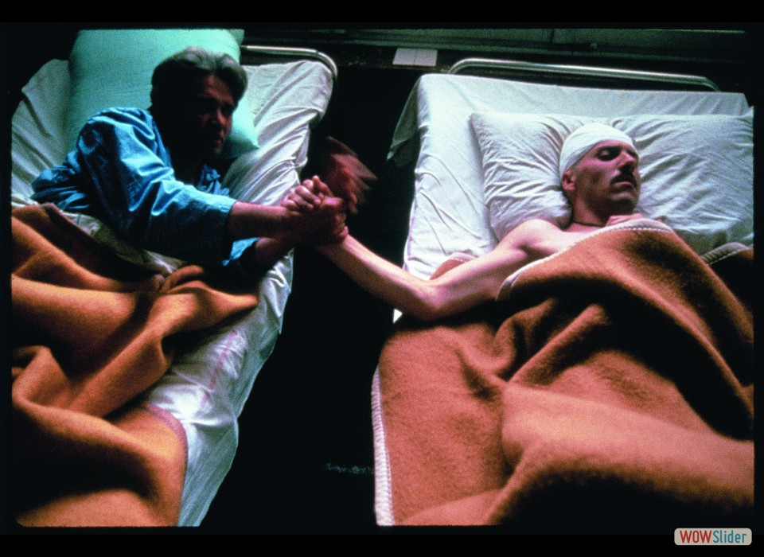A years-long war started in 1992, affecting more than 4 million people, including landmine & gunshot victims in need of urgent medical care. Despite the humanitarian aid provided by the U.S. & others, the war claimed more than 97,000 lives before it ended on November 21, 1995. Photo courtesy: Chris Rainier, IMC.
- 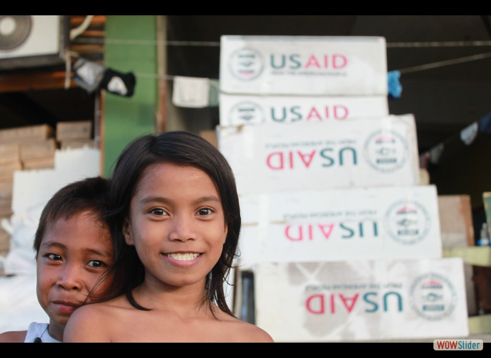November 8, 2013: Typhoon Haiyan made landfall, taking the lives of 6,300 people. OFDA & partner the International Organization for Migration (IOM) helped 10-year-old Angelina & countless others get back on their feet after their homes were destroyed. Photo courtesy: Joe Lowry, IOM.
 In 2011, when the worst drought in 60 years gripped the Horn of Africa, OFDA worked with Mercy Corps to reduce its devastation by providing emergency feed to sustain livestock, animal vaccinations, & opportunities for farmers to diversify their income. Photo courtesy: Kelly Lynch, Mercy Corps.
In 2011, when the worst drought in 60 years gripped the Horn of Africa, OFDA worked with Mercy Corps to reduce its devastation by providing emergency feed to sustain livestock, animal vaccinations, & opportunities for farmers to diversify their income. Photo courtesy: Kelly Lynch, Mercy Corps.
slideshow html by WOWSlider.com v6.6m